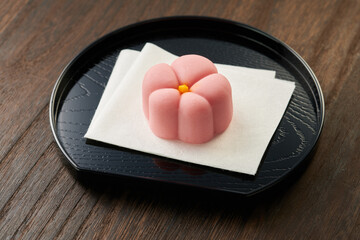
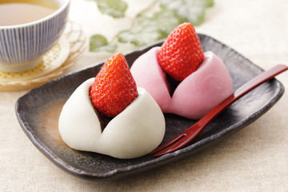
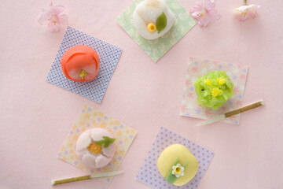
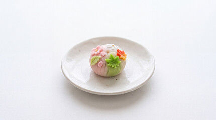
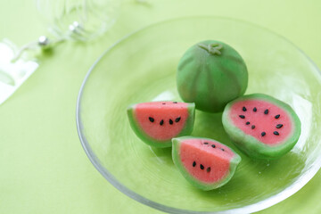
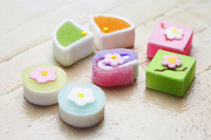
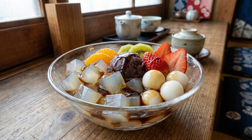
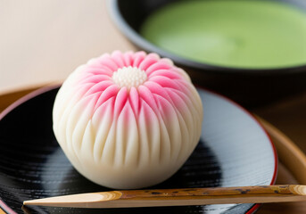

MENU 一覧🍡
-
- 桜花餅
- 桜と花をイメージした和菓子。
ほんのりと桜の風味が味わえる商品です。
ぜひ、桜と花をイメージしながら味わって見てください。
※チョコ/カスタード/こしあん/つぶあん選べます。
¥200
-
- いちご大福
- 当店の大人気メニュー。
数量・季節ともに限定のため、見つけたらぜひお試しを。
※チョコ/クリームチーズ/ミルクホイップ/こしあん/つぶあん選べます。
¥300
-
- 欲張りセット
- 5種類まで選べるセット。
中身は、カスタード/チョコ/クリームチーズ/白あん/こしあんの中から選べます。
※同じ中身でもOK。
¥600
-
- 四季のきらめき
- 日本の四季の美しさを表現しました。
一口頬張れば、季節の風味を感じれます。
優しい甘さと口溶けにこだわりました。
¥320
-
- 季節の厳選アソート
- 四季折々の旬のフルーツや素材を活かした、和菓子が苦手な方でも楽しめる季節限定メニューのラインナップです。
※種類はお選びいただけません
¥220
-
- 和菓子風なお菓子
- 外見は和菓子の柄ですが、味はラムネ味です。
少しだけ桜の風味がします。
※種類はお選びいただけません
¥480
-
- あんみつ
- フルーツのみずみずしい酸味・果汁が合わさることで、
あんこ特有の重たさが消えて後味がすっきりと仕上がります。
和菓子が苦手な人でも食べやすいです。
※種類はお選びいただけません
¥450
-
- はなごころ（チーズケーキ味）
- 「菊」をモチーフにした練り切りです。
このお菓子は、日本の伝統的な美意識と季節感を象徴する逸品です。
※種類はお選びいただけません
¥340